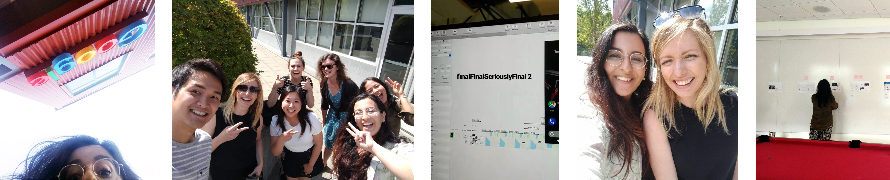

UX Internship @Google
Last summer, I packed my bags to move to a different city for my 3rd and last internship before graduating. I spent 3 months working on a self-driven vision project that reimagines Google Maps for local communities in a holistic, end-to-end way. At the end of my internship I presented my final project to the global Geo UX team and got positive feedback from many including the Director of UX.
I’m really proud of the outcome, but I unfortunately can’t talk about the specifics of my work - so scroll down to see a reference written by my mentor/manager and read a bit about my experience and overall process.
Lauren Celenza
Senior UX Designer + Researcher @ Google